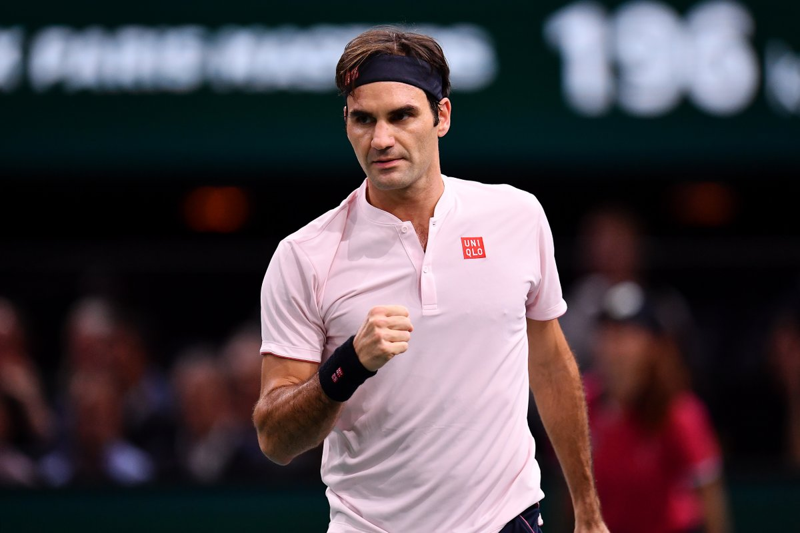
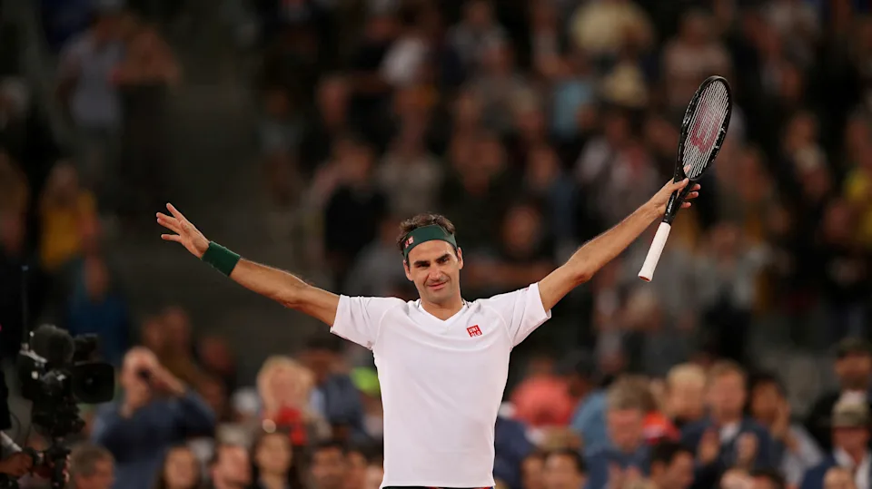
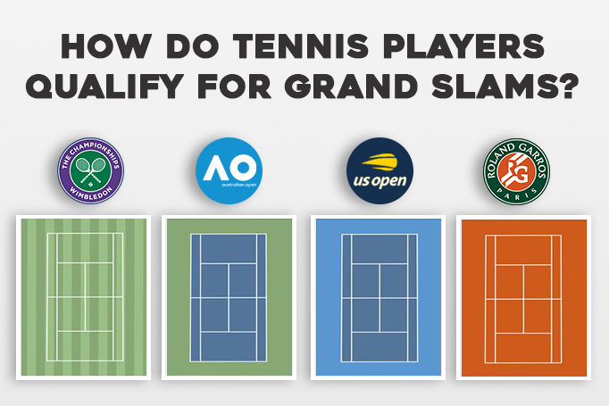

História do Ténis

Regras do Ténis
Uma partida de tênis pode ser uma partida de simples (um contra um) ou duplas (dois contra dois). Um sorteio antes do início do jogo define o jogador/dupla que começará servindo e o que começará recebendo o saque. O jogo é dividido em sets/partidapt, games e pontos. O set é ganho pelo primeiro jogador/dupla a atingir 6 games, com dois games, no mínimo, de diferença para o adversário. Caso haja empate no set de 6-6, será disputado um tie-break, no qual o jogador que vencer 7 pontos primeiro, com uma diferença de dois pontos para o adversário, ganha o set. Em caso de diferença menor a dois pontos, segue-se o tie-break até que a diferença seja cumprida. Pode-se também, em casos especiais pré definidos (sempre no último set do jogo), jogar-se um Super Tie-Break, onde aquele que atingir 10 pontos, com uma diferença mínima de 2 pontos vence a partida. O game é uma soma de pontos. No mínimo quatro pontos são disputados no game. A contagem é feita por 15-30-40-game. Caso chegue-se a uma contagem de 40-40, o jogador que vencer dois pontos seguidos vence o game. O ponto começa a ser disputado quando o jogador que está sacando joga a bola para o outro lado da rede, de modo que ela caia dentro da área de serviço. São duas tentativas para se iniciar o ponto, caso contrário perde-se o ponto. Perde-se o ponto quando: a bola não ultrapassa a rede; a bola pinga fora dos limites da quadra; a bola pinga duas vezes dentro de um dos lados da quadra. Somente a raquete pode tocar a bola (exceto no saque, onde o lançamento da bola é feito com as mãos).[5]

Este è Roger Federer para mim o melhor jogar de ténis de todos os tempos
Grand Slam
Os torneios de Grand Slam, também chamados de majors, são os quatro eventos anuais mais importantes do ténis. Eles oferecem o maior número de pontos no ranking mundial, prémios em dinheiro, atenção do público e dos mídia. Os títulos nestes torneios são chamados de Títulos de Grand Slam. O termo Grand Slam foi usado pela primeira vez em 1933, pelo jornalista norte-americano John Kieran. Ao descrever a tentativa, naquele ano, de Jack Crawford de ganhar todos os quatro títulos, comparou-a com o grand slam em bridge. No entanto, na final do US Open, Crawford foi incapaz de ganhar contra Fred Perry. Foi somente em 1938 que Donald Budge se tornou a primeira pessoa a ganhar o Grand Slam. A expressão, usada inicialmente para denominar o facto de vencer os maiores eventos do ténis, acabou mais tarde sendo incorporada por outras modalidades desportivas, como o golfe, para descrever um desempenho similar.
